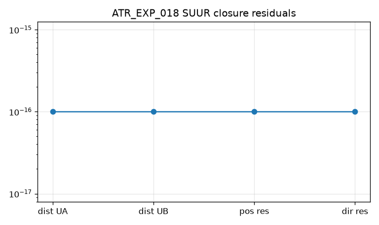

ATR_EXP_016 — Intersecting-pair persistence PASS
Expected. IntersectingPairsAligned6R pair distances remain 0 at regular and seeded q
Observed. named_ua=0.000e+00, named_ub=0.000e+00, seeded_max_ua=0.000e+00, seeded_max_ub=0.000e+00

Local fixed-position continuation and discriminating SUUR tests · Implementation complete / Check-in 4 draft · M4 — Two-dimensional pointing surface
This readout does not authorize fibers, spherical four-bars, McCarthy–Soh, or exact UR. Check-in 4 remains a human gate.
Predictor-corrector continuation of p(q)=p0 with q6 constant produces a local 2D regular subset with rank-two pointing motion. SUUR φ is defined exactly when intersecting-axis pairs persist, and the old N_red embedding test is non-discriminating.
Intersecting-pair distances persist away from home, φ is defined only on that geometry, and GenericAligned6R remains a negative control where the deprecated compound-tangent test still passes. Local continuation patches on IntersectingPairsAligned6R and URLikeAligned6R stay near p0 with rank-two pointing on the regular subset. This is a local C10 patch, not a fiber or spherical RRRR.
Expected. IntersectingPairsAligned6R pair distances remain 0 at regular and seeded q
Observed. named_ua=0.000e+00, named_ub=0.000e+00, seeded_max_ua=0.000e+00, seeded_max_ub=0.000e+00
Expected. GenericAligned6R pairs do not intersect; φ undefined; old principal angles ~0
Observed. dist_ua=1.535e-02, dist_ub=1.386e-01, phi_defined=False, old_max_angle=0.000e+00

Expected. φ defined on IntersectingPairsAligned6R; closure residuals below tolerance
Observed. defined=True, closed=True, pos_res=0.000e+00, extra_max_pos=0.000e+00

Expected. IP continuation patch is locally 2D with rank-two pointing away from labeled singular samples; φ defined on the regular subset
Observed. regular=81/81, singular=0, failed=0, max_p=6.991e-15, reverse_err=0.000e+00, phi_regular=True

Expected. URLike continuation via the same API yields a local 2D regular subset; no SUUR map required
Observed. regular=81/81, singular=0, failed=0, max_p=9.845e-15, reverse_err=0.000e+00

Pending human Check-in 4. If approved, next stage is an explicit one-dimensional fiber constraint. Spherical RRRR and exact UR remain blocked.